Hello, Steven William!
Log Out
Food Picker
Food Picker is here to help you pick food when you’re not sure on what to eat! Sort, filter, and randomize food anyway that you’d like!
Home
Search
Randomize
Protein
Chicken
Beef
Pork
Others
Mushroom
Broccoli
Cheese
Allergens
Chicken
Beef
Pork
Mushroom
Broccoli
Cheese
Nutritional Value
Low Fat
Low Sugar
Hi Protein
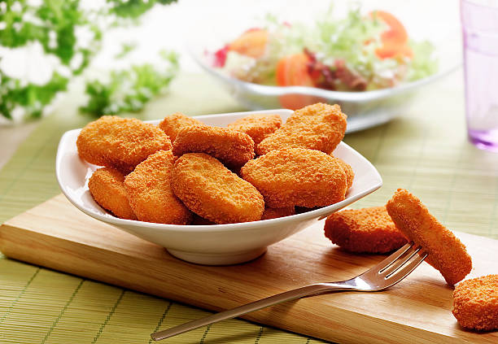
Chicken Nuggets
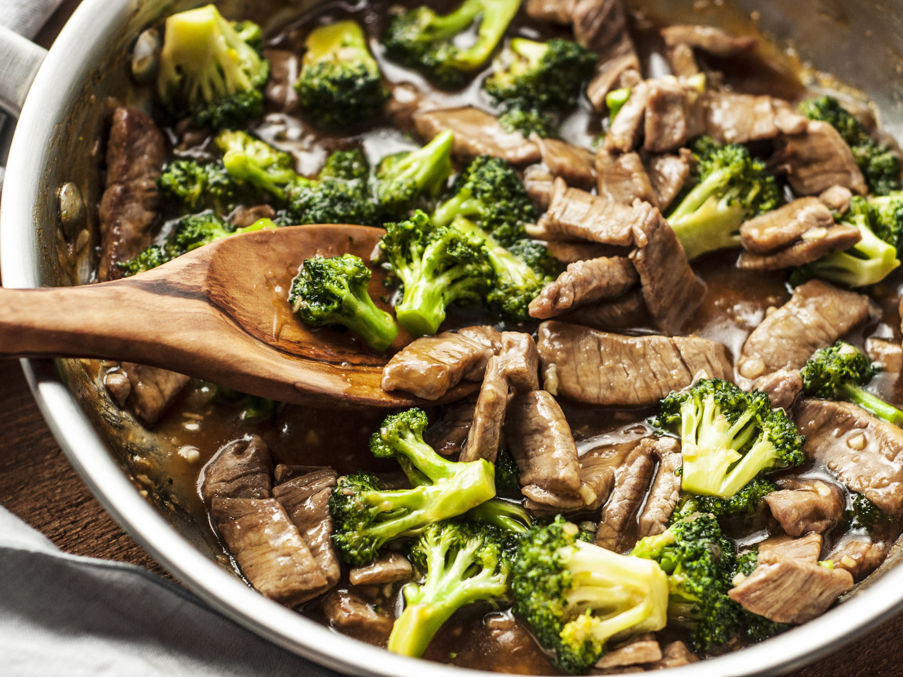
Stir Fried Beef Broccoli
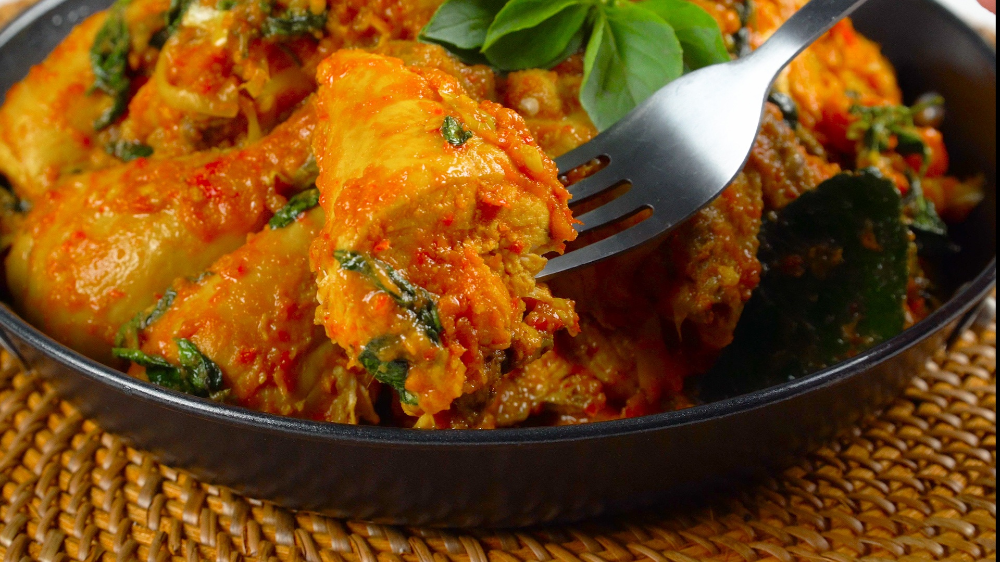
Manado Woku Chicken
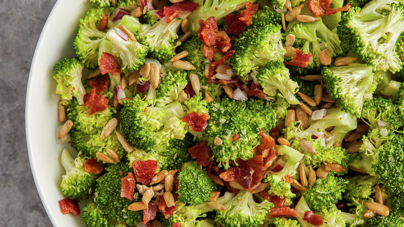
Broccoli Bacon Salad
Chicken Mushroom Cream Soup
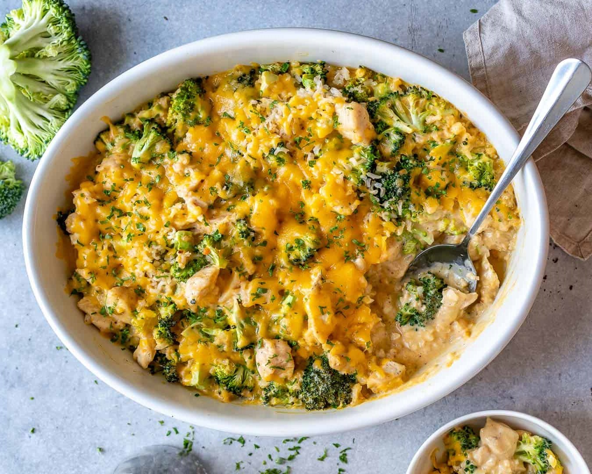
Cheesy Chicken Broccoli Casserole
Crispy Fried Enoki
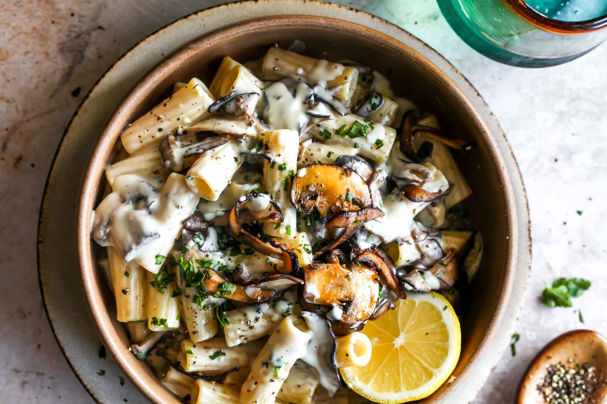
Creamy Mushroom Pasta
Beef Lasagna
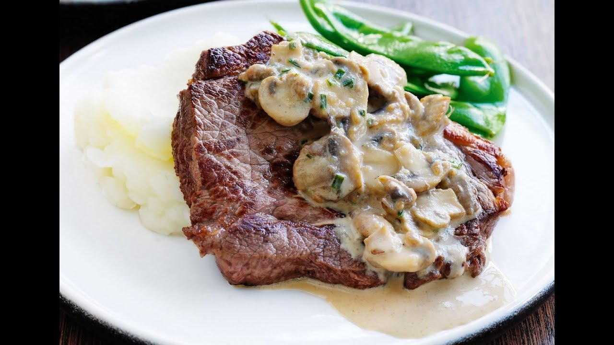
Beef Steak with Mushroom Sauce
Beef Hamburger
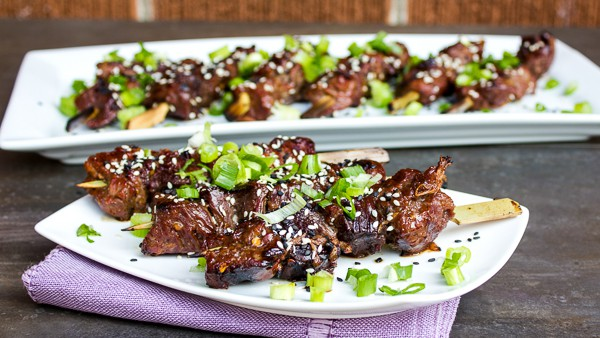
Sesame Beef Skewers
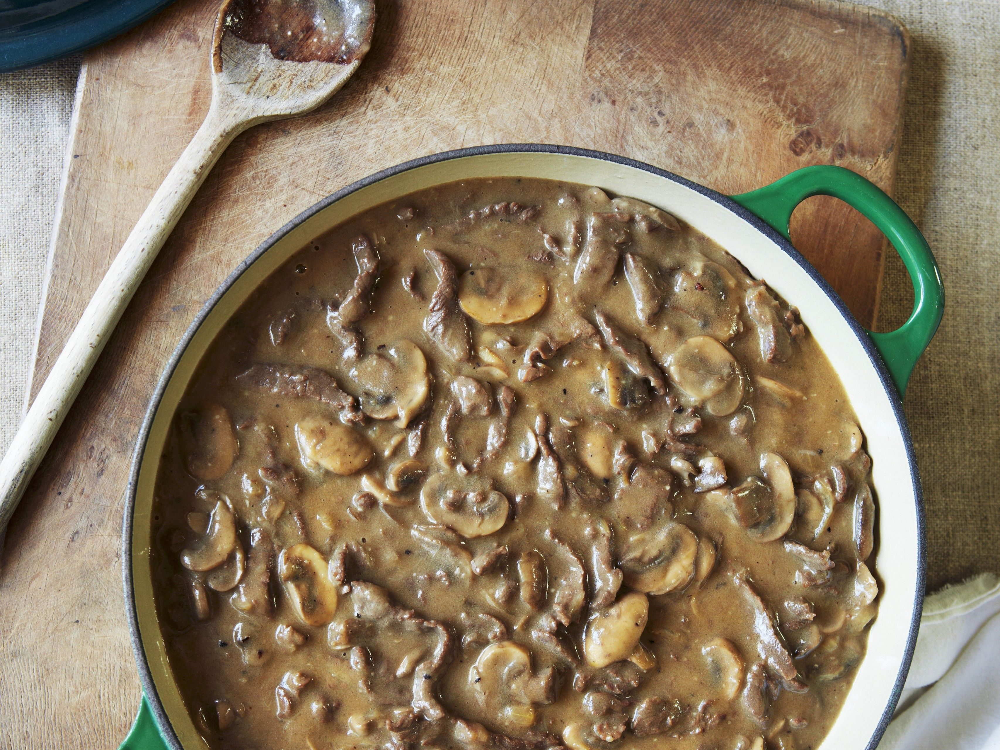
Mushroom Stew
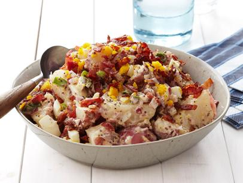
Cheesy Bacon Potato Salad
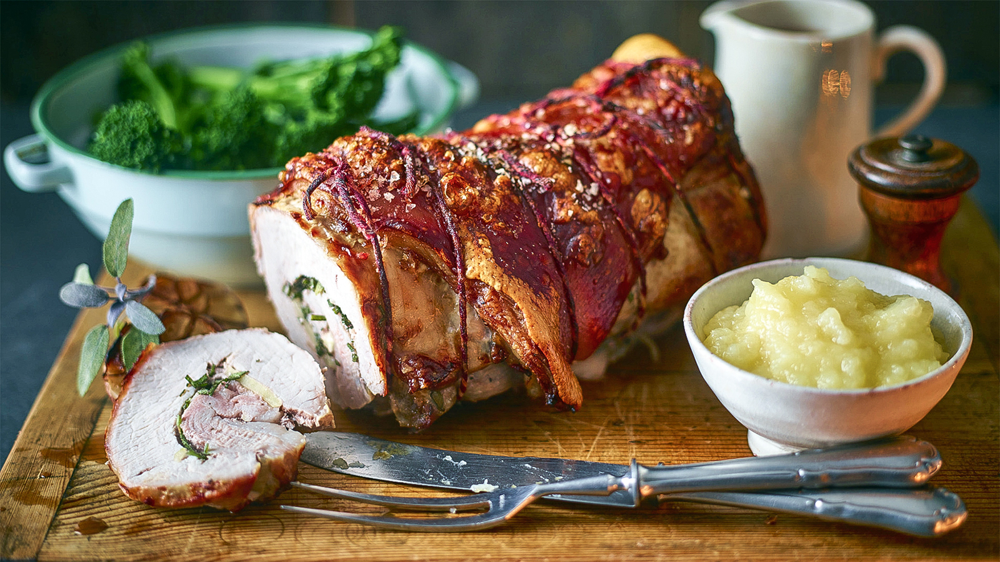
Rolled Roast Pork Loin
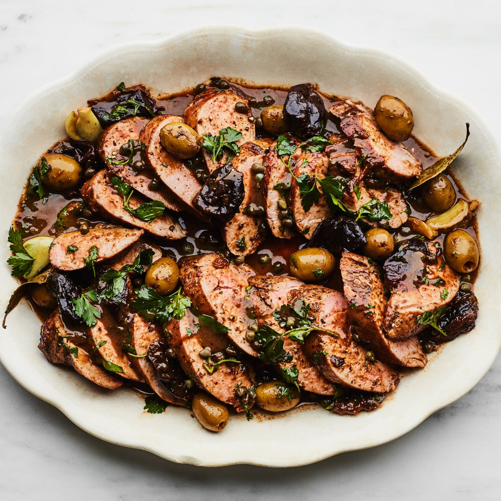
Pork Marbella